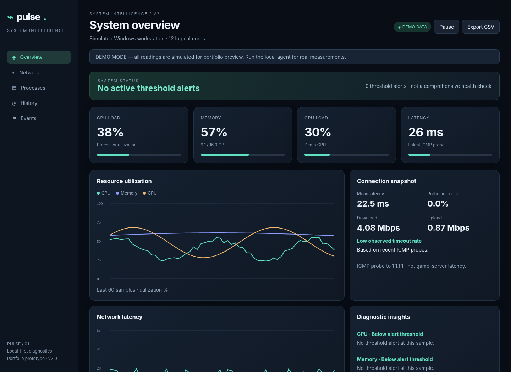

INDEPENDENT CONCEPT · AI-ASSISTED PROTOTYPE · 2026
Pulse — System Intelligence
Explore PC performance, connectivity and incident history.

01 / WORKFLOW
Interactive workflow
Inspect resource charts, CPU cores, network probes, process search, history and incident events.
02 / IMPLEMENTATION
Implementation & limitations
HTML/CSS/JavaScript with a downloadable Python/psutil and SQLite agent. Online readings are simulated. Live NVIDIA telemetry requires compatible hardware; alerts are not root-cause diagnoses.
Project provenance
Prototype implementation and initial documentation were generated with ChatGPT assistance. User testing and independent validation are not claimed.